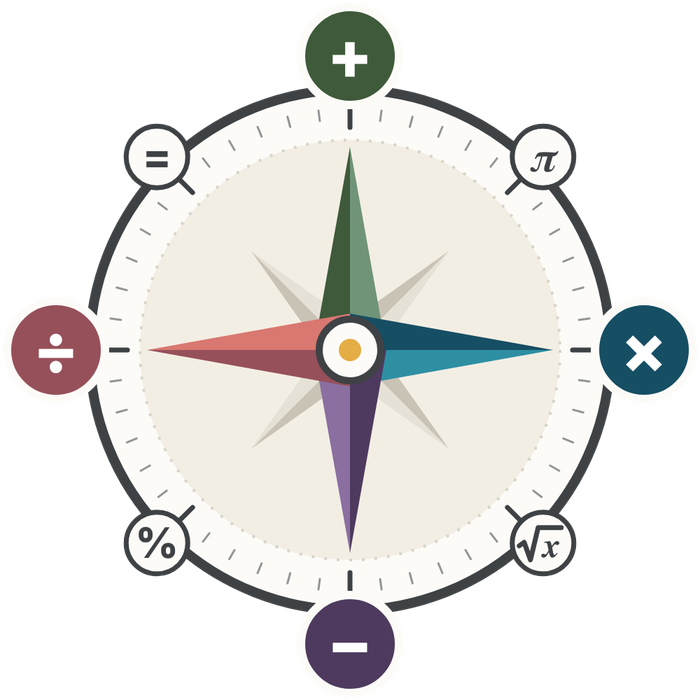
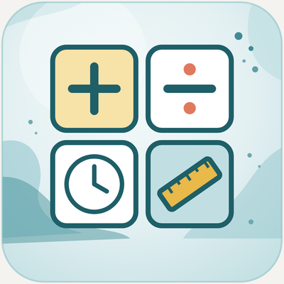
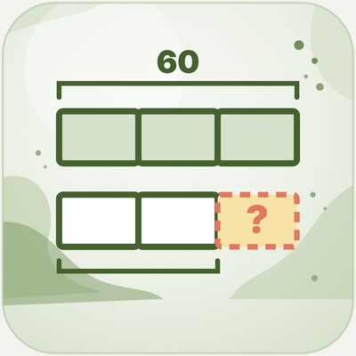
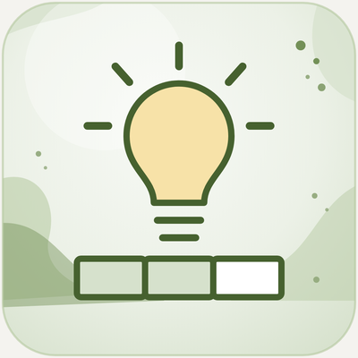
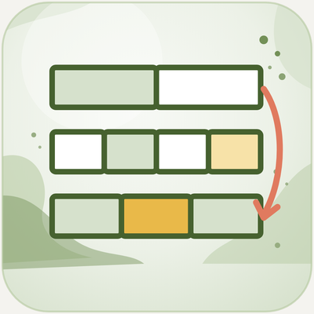
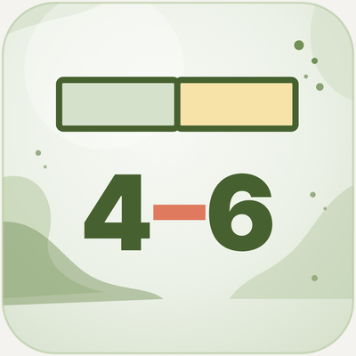
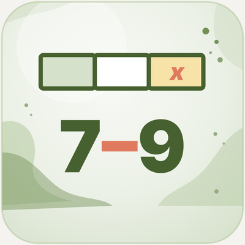

Mattekompassen
Din väg genom matematiken i årskurs 7–9
Välj din årskurs
7Åk 7
Åk 7
Utforska- Planering
- Lektioner
- Trygg start
- Interaktiva övningar
8Åk 8
Åk 8
Utveckla- Problemlösning
- Tillbakablick
- Utmana dig
- Diagnos
9Åk 9
Åk 9
Fördjupa- Sammanfattning
- Repetitionsuppgifter
- Test
- Nå toppen
Före, under och efter högstadietKom väl förberedd till högstadiet, stärk dina grunder eller ta nästa steg mot gymnasiet.
Nationella prov och PISALäs om proven i åk 6 och åk 9, träna inför dem och testa vardagsnära uppgifter.

MatematikverkstadInteraktiva övningar för att stärka dina matematiska grunder.
Matematiska begreppMattebegrepp och resonemangsord.

BlockmodellenBlockmodellen hjälper dig vid problemlösning. Du ritar uppgiften som block och ser vad du vet och vad du ska ta reda på.

Så tänker duLär dig blockmodellen: steg för steg, modeller och tips.
Blandade uppgifter15 genomgångar som vi löser tillsammans, steg för steg.
MellanstadietKom igång med enklare tal och korta steg.
HögstadietStörre tal, fler steg och ekvationer med x.